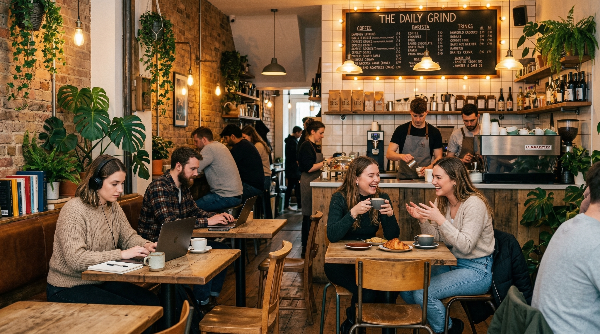

Café Brújula es una de las cafeterías más conocidas del centro de Oaxaca y destaca por su ambiente acogedor y relajado, ideal para sentarse a platicar, leer o trabajar un rato mientras disfrutas del movimiento del Centro Histórico; su café suele ser bien valorado por su sabor equilibrado y buena preparación, ya sea en espresso, latte o bebidas frías, y también ofrecen panadería, postres y opciones sencillas para acompañar, además de café en grano para llevar, aunque algunos clientes mencionan que el servicio puede ser un poco variable en horas pico y que a veces el lugar se llena bastante, en general mantiene una buena relación calidad-precio para la zona y se consolida como una opción confiable tanto para locales como para turistas que buscan un café rico en un espacio agradable y céntrico.
Tip: Llegue a media tarde para disfrutar de una mesa tranquila y conchas recién horneadas. Accesibilidad: hay un pequeño escalón en la entrada; el personal le ayudará a sentarse si es necesario. La cafetería obtiene granos de productores cercanos y publica el perfil de tueste del día en una pizarra detrás del mostrador.
Audio del lugar
